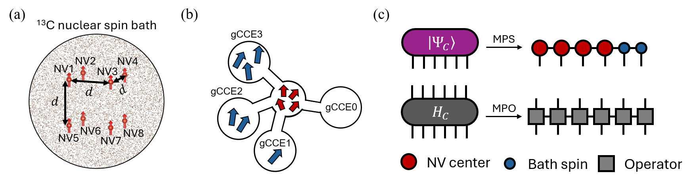

Abstract
- 1SKKU Advanced Institute of Nanotechnology, Sungkyunkwan University, Suwon, Korea
- 2Pritzker School of Molecular Engineering, University of Chicago, Chicago, IL, USA
- 3Center for Quantum Information, Korea Institute of Science and Technology, Seoul, Korea
- 4Department of Quantum Information Engineering, Sungkyunkwan University, Suwon, Korea
- 5Division of Nano and Information Technology, KIST School, Korea University of Science and Technology, Seoul, Korea
Scaling solid-state spin registers to many qubits is important for quantum computation, communication, and sensing, and requires a quantitative understanding of multi-qubit decoherence in complex spin environments [1]. While first-principles approaches such as the cluster-correlation expansion (CCE) and its generalized form (gCCE) have successfully described single-qubit decoherence, their application to multi-qubit dynamics remains limited by the exponential growth of the Hilbert space. Tensor network (TN) methods can mitigate this growth, but long-range interactions in realistic spin baths limit their efficiency. Here, we introduce TN-gCCE, in which the cluster expansion factorizes the bath contribution into cluster correlations, while TNs compress the quantum state of each cluster into a matrix product state (MPS) according to its entanglement structure. We apply TN-gCCE to multi–nitrogen-vacancy (NV) center spin registers coupled to 13C nuclear-spin baths, a canonical model system. For up to six NV centers, TN-gCCE shows excellent agreement with gCCE under Ramsey and Hahn-echo sequences. For six-NV Hahn-echo simulations, it also reduces the computational cost about 13fold and the peak memory per core about 8fold. Our results establish TN-gCCE as a powerful and scalable framework for modeling decoherence in solid-state spin-qubit registers, providing a pathway toward the design and optimization of large-scale quantum systems.

- C. L. Degen et al., Rev. Mod. Phys. 89, 035002 (2017).